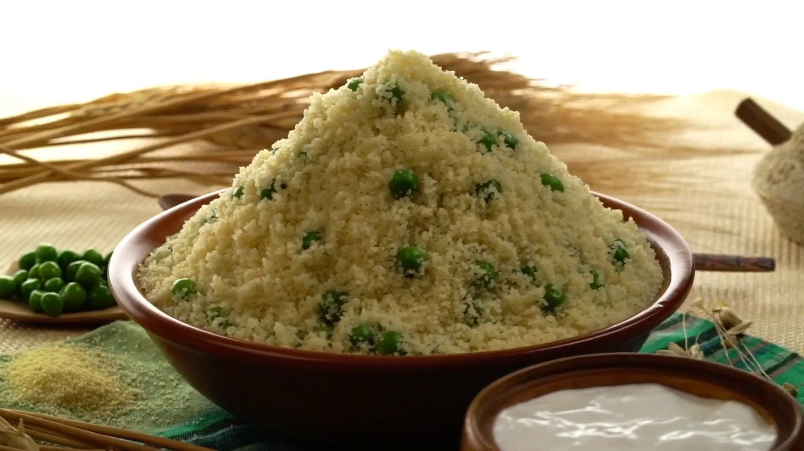

Mesfouf

Description
Mesfouf is a light couscous-based dish that's especially popular during Ramadan and festive occasions.
Unlike regular couscous served with stew, Mesfouf is often enjoyed on its own, either sweet (with raisins, dates, and sugar) or savory (with peas, beans, or even buttermilk).
In this article, we will be covering the savory version only, as it is the author's personal favorite.
Ingredients:
- 2 cups couscous
- 1 cup peas or fava beans (steamed or pre-cooked)
- 2 tbsp olive oil or smen
- Salt, pepper
- Buttermilk or laban (served on the side)
Steps:
- Steam the couscous using a couscoussier or a steamer:
- Moisten couscous with a bit of water and a pinch of salt.
- Steam for about 20 minutes, fluff with butter, and repeat the process 1–2 times for fluffiness.
- Mix with cooked vegetables, olive oil, and season to taste.
- Serve with a glass of buttermilk or a bowl of laban for a light, refreshing meal.
Go back to Homepage